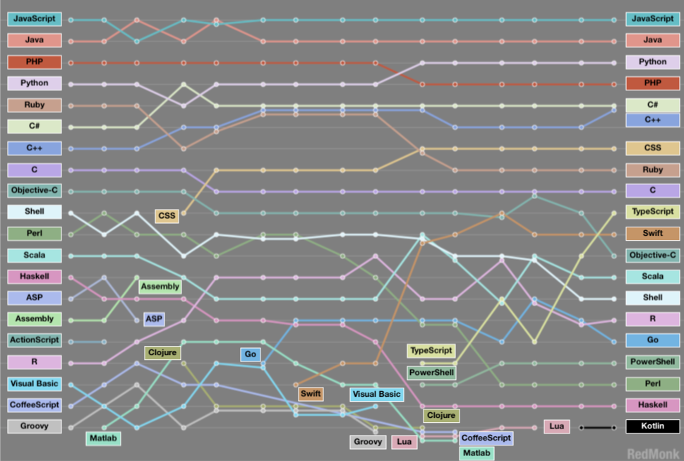

- Software generalist
- Modern Python enthusiast
- Recovering Microsoft partisan
- Contact info in Zoom Chat
Good parts
Best practices
Where to get help

Struggle
Repetition
Articulation
- Better too much beer than not enough
- Light coverage for
- Inapplicable
- Unimportant
- Boring
- Heavier coverage where it matters
- You know some basics of
- Programming
- Networking
- Command line tools
- More is better
- Less is ok too
- Feedback
- Questions
- Cameras
No eye-contact makes this even more important

- Slides are HTML
- Projects are pure Python
- Live here:
https://github.com/bathcat/python_foundations
- Won't last forever
- Moving target
-
Fundamentals
- Big Picture
- Expressions
- Primitives
- Containers
-
Tools & Techniques
- Containers (Continued)
- Objects
- Guardrails
- Functions
-
IoT Projects
- IoT Introductions
- Generators and Comprehensions
- Defensive Programming
- Name
- Background
- Expectations
- Childhood career ambitions
- Hours
RestroomsPhones- Breaks
FoodCoffee
- Use the tools
- Surveys
- Chat - Just like Slack
- Questions & Answers - FAQ
- Feedback
- Pair programming via breakout rooms
- Turn on your camera!
- Let's get set up
- Follow along
- Goals
- Aquire
- Install
- Run
- Poke around
- List 5 Python features
- Define 'pythonic'
- Devise a personal learning approach

- 30 years old
- Open source
- Interpreted (mostly)
- Benevolent dictator: Guido Van Rossum
- High-Level
- Multi-paradigm
- Dynamic typing (mostly)
- Automatic memory management

A script is what you give the actors, but a program is what you give the audience.
- Multi-platform
- Widely used
- Lots of libraries
- Lots of learning resources

- Tons of software:
- Libraries
- Tooling
- Tons of resources:
- Books
- Videos
- Blogs
- Some software engineers
- e.g. Dropbox
- Lots of non-software people who write lots of software
- As a calculator
- As glue
- e.g. Finance, IT Operations, Big Data, Math, Science
The idioms of a programming language are defined by its users. Over the years, the Python community has come to use the adjective Pythonic to describe code that follows a particular style.
Python programmers prefer to be explicit, to choose simple over complex, and to maximize readability.
- Beautiful is better than ugly.
- Explicit is better than implicit.
- Simple is better than complex.
- Complex is better than complicated.
- Flat is better than nested.
- ...
Python has long maintained the philosophy of "batteries included" --Having a rich and versatile standard library which is immediately available, without making the user download separate packages.
- C Sharp
using System; public class Program { public static void Main(){ Console.WriteLine("Hello World"); } } - Python:
print("Hello World")
- Hacky
- Not always fast
- No static type checking
- Not great dependency management
- Not great mobile
- Paradox of choice
- Active engagement
- Multiple tracks work best
- Accept you will suck for a while
- Books
- Videos
- Koans
- Flash Cards
- Projects


- Interactively via command-line REPL
- Interactively via IDE
- e.g. VS Code
- Via interpreter
- Natively (e.g. py2exe)
- For Linux/MacOS
python3 - For Windows
py - To quit, type
exit()
- Integrated Development Environment
- Comes with Python
- Not very good

- In VSCode, open the directory $/python_foundations/labs/
- Read instructions: src/A.0.HelloPython/README.md
- Build the applications starting with 'startingpoint'
- Associate names with values
- Pop into existence on assignment
- Rules:
- Only letters, numbers, and underscores
- Don't start with a number
user_id = 12
label = 'Mailing Address'
xs = [0,118,2291]
address_1 = '1234 American Way'- Invoke with parenthesis (always)
- Pass arguments (sometimes)
- Get something back (sometimes)
print()
print("Hello World!")
high_scores = [11,23,4,7]
result = sum(high_scores)
- Define with
defdef print_lyrics(): print("I'm a lumberjack, and I'm okay.") print("I sleep all night and I work all day.") - Return values
def add(a,b): return a + b
- Lots of languages use braces:
function add(a,b){ return a+b; } - Python uses indentation:
def add(a,b): return a+b
- The parser is confused by empty functions
- Or classes or branches
- Use
passas a placeholderdef do_nothing(): pass if true: pass
- Used for annotation
- Don't affect any behavior
- Demarcated with #
- Use judiciously
# Below is the id of the user
user_id = 12def get_sphere_volume(radius):
"""Figures out the volume of a sphere with the
specified radius.
"""
pi = 3.14
return 4*3*pi*(radius**3)
if color == (0,255,0):
return 'green'
elif color == (255,0,0):
return 'red'
else:
return 'unknown'- Equality operator does structural equality
- For reference equality, use
isxs = [1,2,3] ys = [1,2,3] print(xs == ys) print(xs is ys) print('\n')
ys.pop(0) print(xs == ys) print(xs is ys)```
- Python loops come in just 2 flavors:
forwhile
- Lots of languages have a
forloop:for(int i =0;i<10;i++){ print(i); } - Python uses range:
for i in range(10): print(i)
- Kind of a foreach
names=('Rob','Mary','David','Jenny','Chris','Imogen') for name in names: print(name)
for
for i in range(10):
print(i*i)range- Three arguments
- Exclusive max
- Inclusive min (defaults to 0)
- Step (defaults to 1)
rangefor i in range(1,10,2):
print(i)while- Executes as long as a condition is true
i = 0
while i < 3:
print(i)
i = i + 1 returnbreak
i = 0
while True:
print(i)
i = i + 1
if i>=3:
break
print("done!")- In VSCode, open the directory $/python_foundations/labs/
- Read instructions: src/E.O.FizzBuzzTexty/README.md
- Build the applications starting with 'startingpoint'
- Shape of data
- e.g.
- Letter
- Number
- List
- Table
- Atoms
- String
- Int / Float
- Boolean
- None
- Containers
- List
- Dictionary
- Etc...
- Everything is an object
- Can be integers or reals
- Limited precision
- Arbitrarily big
x, y = 3, 2
print(x + y) # = 5
print(x - y) # = 1
print(x * y) # = 6
print(x / y) # = 1.5
print(x // y) # = 1
print(x % y) # = 1
print(int(3.9)) # = 3
print(float(x)) # = 3.0
print(x ** y) # = 9- Use the 'constructor'
intimport time time_text = input('Enter the cooking time in seconds: ') time_int = int(time_text) print('Put the egg in boiling water now') time.sleep(time_int) print('Take the egg out now')
floattime_text=input('Enter the cooking time in seconds: ')
time_float=float(time_text)
sleep(time_float)students_text = input('How many students: ')
students_int = int(students_text)
pizza_count = students_int/1.5
print(f'You will need {pizza_count} pizzas')x = 1 > 2
print(x) # False
y = 2 > 1
print(y) # Truecolors=['red','red','green','red']
colors_as_boolean = bool(colors)
print(colors_as_boolean)
pi = 3.14
pi_as_boolean = bool(pi)
print(pi_as_boolean)
label = 'False'
label_as_boolean = bool(label)
print(label_as_boolean)empty_list = []
zero = 0
false=False
empty_string=''
none=Nonex, y = True, False
print((x or y) == True) # True
print((x and y) == False) # True
print((not y) == True) # True- Delimited with ' or "
- Immutable
- Unicode support
message1 = "I've got an apostraphe."
message2 = 'Dude. "Big Changes" are coming."
message3 = "I'm a 🐐 and " + message1- For interpolation prefix with f
- Put information in brackets {}
id=11
name = 'Sandy'
print(f"Hello {name} your id is: {id}")str tricks'Dr. Who'.removeprefix('Dr. ')
'1,2,3'.split(',')
'Hello world'.title() - Represents the absence of a value
- Equivalent to
nullin C++,Java,etc - Implicit function return value
x = None
y = print(x)
if y == None:
print('Y is none too!')- In VSCode, open the directory $/python_foundations/labs/
- Read instructions: src/Q.O.MontyHall/README.md
- Build the applications starting with 'startingpoint'
- Delimited with square brackets []
- Mutable
- Holds anything
words = ['here','are','words']
word_count = len(words)
print(f"There's {word_count} words")- Access elements with brackets []
- Zero based
- Negative indexing: relative to the end
xs = ['it','is','like','a','weasel']
first_thing = xs[0]
second_thing = xs[1]
last_thing = xs[-1]- Add single element with
append - Add multiple elements with
extend- Or the operator
+=
- Or the operator
nums = []
nums.append('three')
nums += ['four','five']
nums.extend(['six','seven'])- Remove by index with
pop - Remove by value with
remove
bag = [1,2,3,'Chicken','Lizard']
bird = bag.pop(3)
bag.remove('Lizard')names = ['bloggs', 'smith', 'patel']
if 'bloggs' in names:
print('Joe is there.')
if 'kim' not in names:
print('Adding patel'):
names.append('patel')- Use the
sortmethod - Works in-place
l = [2, 1, 4, 2]
l.sort()
print(l)- In VSCode, open the directory $/python_foundations/labs/
- Read instructions: src/G.O.ListGolf/README.md
- Build the applications starting with 'startingpoint'
- Stores key / value pairs
- Unordered
- Delimited with curly brackets {}
employee = {
'id': 2399,
'givenName': 'joe',
'surname': 'bloggs',
'favoriteColors': ['green', 'purple']
}- ID to Name mapping
- Object to Count mapping
- Name of a feature to value of the feature
- A value can be anything
- A key must be hashable
- Strings
- Numbers
year_ratings = {
2019: 'Ok',
2020: 'Dumpster fire',
}- Get & set values with square brackets []
calories = {}
calories['apple'] = 52
calories['mango'] = 89
calories['butter'] = 546
print(calories['apple'] < calories['butter'])sizes = {'big':10,'medium':5,'small':2}
for key,value in sizes.items():
print(f'{key} is {value}cm')
- You know all the keys ahead of time
- Bad idea!
students=[
{'name':'Vlad','age':400},
{'name':'Gina','age':11},
]
- In VSCode, open the directory $/python_foundations/labs/
- Read instructions: src/G.1.DictionaryGolf/README.md
- Build the applications starting with 'startingpoint'
- Create a Python
set - Create a Python
tuple - Explain the difference between common data structures
- Like a math set
- Unordered
- Unique
- Elements must be immutable
- Curly braces {}
colors={'red','red','green','red'} print(colors) - Constructor:
colors=set(['red','red','green','red']) print(colors)
in- Unordered means you can't use a subscript
colors=set(['red','red','green','red']) first_one = colors[0] # Error! - Use
ininsteadcolors=set(['red','red','green','red']) has_purple = 'purple' in colors
- Filter duplicates from a sequence
- Do mathy things
- Union
- Intersections
- Immutable
- Ordered collection
- Heterogeneous data
- Delimited with parenthesis ()
red = (255,0,0)
green = (0,255,0)
blue = (0,0,255)
yellow = (128,128,0)- Access elements with brackets []
- Zero based
- Negative indexing: relative to the end
xs = ('it','is','like','a','weasel')
first_thing = xs[0]
last_thing = xs[-1]
xs[0] = 1200 # Error!
def divide(numerator, denominator):
quotient = numerator // denominator
remainder = numerator % denominator
return quotient, remainder
q,r = divide(13,5)
print(f'quotient:{q} remainder:{r}')- Good: Quick and dirty bundle of data
- Bad: No built-in documentation
points = [ (11, 23), (4, 12), ]
- Immutable
- No naming for clarity
- No protection of invariants
red = (255,0,'chicken') yellow = (255,275,0) purple = (128,0,128)
- Only data-- no behavior
- No help from intellisense
- Awkward syntax
- No protection of invariants
yellow = {'r':755,'g':255,'b':0} purple = {'r':128,'g':0,'b':'spam'}
- Associates names with
- Data
- Behavior
- Usual OO stuff supported (mostly):
- Inheritance
- Polymorphism
- Methods
- Properties
- Encapsulation
- Ignore
selffor now
class Color:
def __init__(self,r,g,b):
self.red = r
self.green = g
self.blue = b
paint = Color(128,128,0)
print(f'Channel red: {paint.red}')- Protect those invariants
class Color:
def __init__(self,r,g,b):
if r < 0 or r > 255:
raise ValueError("Something's wrong here")
# Etc ...
yellow = Color(1128,128,0) #Error!
purple = Color(128,0,128)class Color:
def __init__(self,red,blue,green):
self.red=red
self.blue=blue
self.green=green
def to_hex(self):
return f'#{self.red:x}{self.green:x}{self.blue:x}'
purple = Color(128,128,0)
print(purple.to_hex())class Car:
def __init__(self,make,model):
self.make=make
self.model=model
def drive(self):
return f'This {self.make} is one sweet ride!'
ride = Car('volvo','240')
ride.drive()self- Current instance is the first parameter on instance methods
- Explicit equivalent to
thisin other languages - Called
selfby convention - Passed by the Python runtime, not the caller
- Anything that doesn't touch an instance member
class Car:
def get_makes():
return ["volvo","chevy"]
print(Car.get_makes())
ride = Car()
print(ride.get_makes()) #Bork!- Makes a 'static' property accessible via instance reference
class Car:
@staticmethod
def get_makes():
return ['volo','chevy']
print(Car.get_makes()) #No problem!
ride = Car()
print(ride.get_makes()) #Ok!- Prefix private members with double-underscores __
- Enforced via 'name mangling'
- Prefix non-public members with underscore _
- Convention only, no runtime enforcement
class Car:
def __diagnose(self):
pass
def drive(self):
pass
car = Car()
for attr in dir(car):
if not attr.endswith('__'):
print(attr)class Car:
def __init__(self,make,model):
self._make=make
self._model=model
@property
def make(self):
return self._makeclass Person:
def __init__(self,age):
self._age = age
@property
def age(self):
return self._age
@age.setter
def age(self, value):
if value<0:
raise ValueError('age must be > 0')
self._age = value
dataclass- Creates
__init__for you - Optionally immutable
- May contain methods like any other class
- Requires type annotation
from dataclasses import dataclass
@dataclass(frozen=True)
class Color:
r:int
g:int
b:int
def to_hex(self):
return f'#{self.r:x}{self.g:x}{self.b:x}'
purple = Color(128,128,0)
print(purple.to_hex())- Called for the double-underscore
- Used for python internal behavior
- Lots of them
class DoNothing:
pass
instance = DoNothing()
print(len(instance)) #Error!class DoVeryLittle:
def __len__(self):
return 5
instance = DoVeryLittle()
print(len(instance))| Method | What it does |
|---|---|
__init__ |
Constructor |
__del__ |
Finalizer |
__str__ |
To string |
__hash__ |
Get hash |

- Linting is
- Static analysis
- Finds style and quality issues
- In Python
- PyLint - VSCode default
- Prospector
- Flake8
- Advantages
- Catch possible errors
- Enforce consistent style
- Automatically fix problems
- Disadvantages
- Irritating and overbearing out of the box
Unit test: low-level test case written in the same language as the production code, which directly access its objects and members.
- Unit testing is surprisingly controversial
- Probably because it’s hard to do well
- Think of testing as a skill-- like SQL
- Top complaints
- Time to write
- Time to maintain
- Tests are worthless if they don’t get run
- Catch bugs
- Refactor with confidence
- Documentation that doesn't get stale
- Improved design
- Typed languages are better
- TypeScript eliminates 38% of bugs
- Tests are especially important in Python
- No compile-time help
- No expressiveness through the type
- They have properties
- They can be passed as arguments
def add(a,b):
return a+b
add.description = 'Function to add stuff.'- Name-value pair(s)
- No order requirement
- More explicit
def describe_car(make, model):
"""Display information about a car."""
print(f"\nI have a {make}.")
print(f"My {make} is a {model}.")
describe_car(model='240', make='Volvo')- Can only come after positional arguments
- Makes parameters optional
def get_confirmation(prompt, reminder='Try again!'):
while True:
response = input(prompt)
if response in ('y', 'ye', 'yes'):
return True
if response in ('n', 'no', 'nop', 'nope'):
return False
print(reminder)- Just make a tuple!
- Unpack
def get_web_resource(url):
response = requests.get(url)
status = response.status_code
return response.status_code, response.text
status, content = get_web_resource()def audited(to_audit):
def wrapped(*args,**kwargs):
print('starting')
result = to_audit(*args,**kwargs)
print('done!')
return result
return wrapped
def add(a,b):
return a+b
_add = audited(add)
print(_add(11,22))- Shorthand
- Only one-liners
- Handy for map and reduce
add = lambda a,b:a+b
xs = [1,2,3,4]
squares = map(lambda x: x*x, xs)- A function is pure if:
- It always returns the same thing given the same arguments
- Doesn’t change state
- Advantages:
- Testable
- Reusable
- Easy to reason about
- Doesn’t bork up shared state
- File with the extension '.py'
- Containing Python:
- Variables
- Functions
- Classes
- Executable code
importimport car
car.describe_car('jeep','wrangler')from car import describe_car
describe_car('jeep','wrangler')from car import *
describe_car('jeep','wrangler')import foo # foo imported and bound locally
import foo.bar.baz # foo.bar.baz imported, foo bound locally
import foo.bar.baz as fbb # foo.bar.baz imported and bound as fbb
from foo.bar import baz # foo.bar.baz imported and bound as baz
from foo import attr # foo imported and foo.attr bound as attr